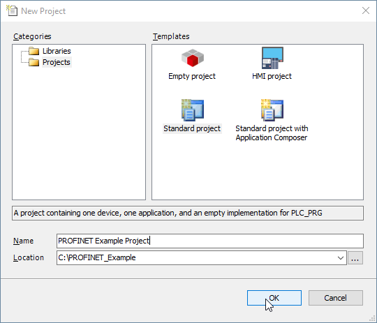
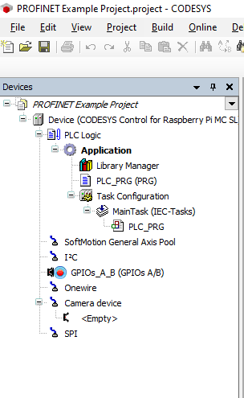
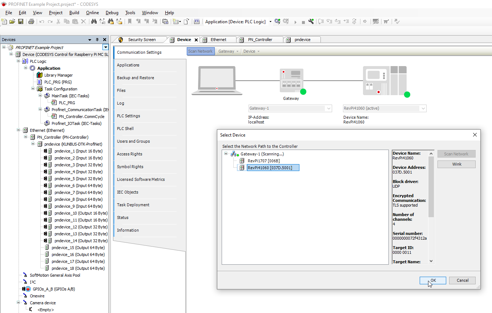
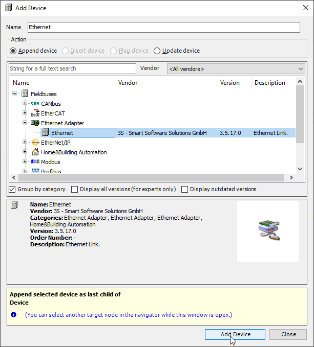
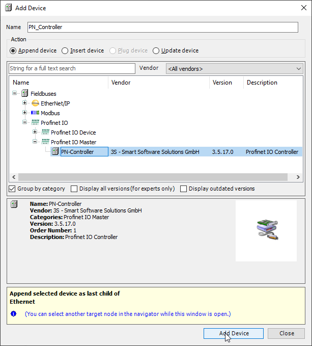
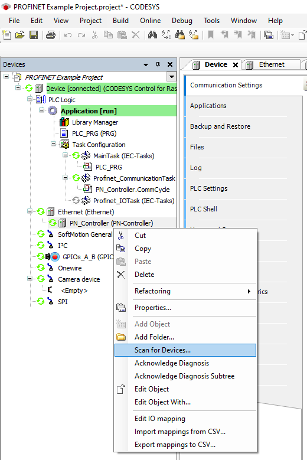
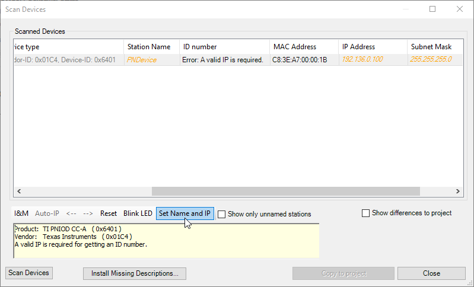
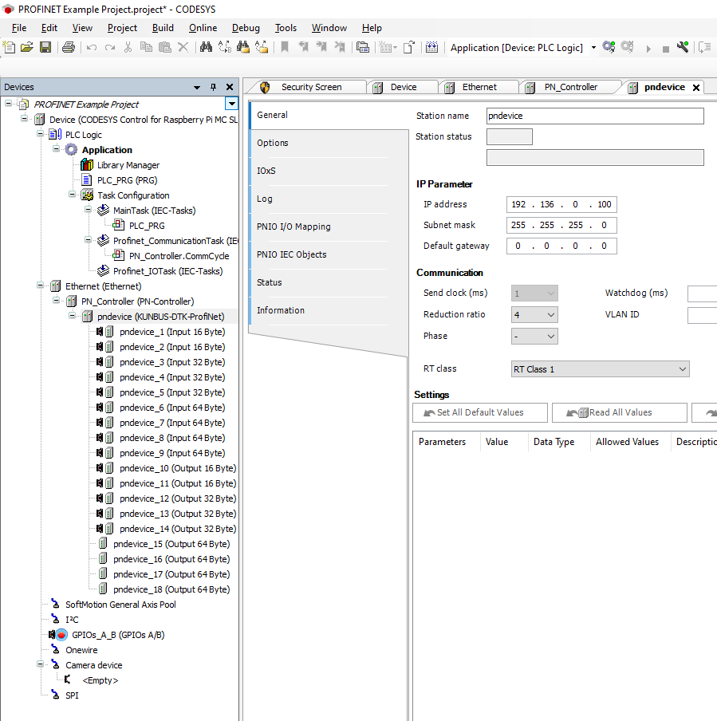

|
PROFINET Device
v1.04.02
|


|
|
PROFINET Device
v1.04.02
|
|
For the CODESYS runtime on the KUNBUS RevPi hardware, the CODESYS Control for Raspberry Pi MC SL is required.
Without a valid license, the CODESYS runtime including the fieldbus functionality will execute for one hour and then exit.
To install the runtime package the CODESYS development system must be started with administrative rights.
Installation is performed from within the CODESYS Package Manager. It is recommended to install the multi-core version.

After the package is installed, the CODESYS runtime system must be installed on the RevPi hardware. From the menu system select Tools → Update Raspberry Pi

Start the CODESYS development system and create a new standard project

Select CODESYS Control for Raspberry Pi MC SL (3S - Smart Software Solutions GmbH) as device and the programming language of your choice.

The development system creates the project structure and populates the structure of the device tree.

Before configuring the PROFINET network, the matching device description file must be installed to the CODESYS device repository.
Navigate to Tools → Device Repository in the menu system and install the file TI AM64X.R5F Simple.xml which is part of the distribution.

Scan for a Gateway Device and select connected RevPi.

Add an Ethernet Interface and select the Port connected to the PROFINET Network.

Continue to add a PROFINET Controller to this Ethernet Interface.

Once complete you can enter Online mode and start your application.
This only starts the PROFINET Controller from where it is possible to scan for connected PROFINET devices.
Provided device description has been installed earlier, the scan process will identify the PROFINET device.

Set a Station Name and an IP Address, the device can now be copied to the project.

Finally exit Online mode, re-enter Online mode to download the new project structure, and start the application.

All devices should now be running.
Now you are free to implement your program.
The PROFINET Process Data LEDs can be addressed by mapping the first byte of Process Data Output Buffer to a BYTE variable in your Structured Text Program.
To control the LEDs individually, declare Boolean variables for each.
In your program, shift the Boolean variables to the corresponding bit within the first byte of Process Data Output Buffer.
After the mapping is done, you can assign/manipulate the variables in your program.
For example, you can assign the variables within your program visualization.

 1.8.18
1.8.18